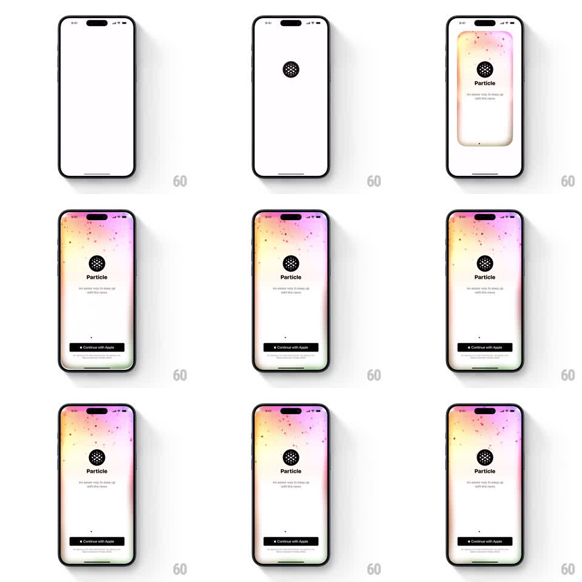

Media
Frame-by-frame

Rebuild this animation 1:1: Particle's splash transition - the dotted Particle logo appears on white, a glowing pink-yellow gradient washes in around the screen edges, and the onboarding elements fade into place.

Rebuild this animation 1:1: Particle's splash transition - the dotted Particle logo appears on white, a glowing pink-yellow gradient washes in around the screen edges, and the onboarding elements fade into place. ## Integration Integration: stack-agnostic spec - springs given as stiffness/damping, timed motions as duration + curve; map every value to your framework and animation library of choice. ## Scene White screen. Center: the Particle logo (a black circle packed with white dots). Below it the wordmark "Particle", the tagline "An easier way to keep up with the news", a page dot, and a black "Continue with Apple" button at the bottom. A soft gradient (pink -> yellow -> green) glows around the top and side edges, sprinkled with tiny particles. ## Motion spec Pattern: logo-first splash reveal with an edge-glow gradient wash. - From blank white: the logo fades in at center (500ms, ease-out) with a slight settle (scale 0.9 -> 1, spring ~300/18). - The gradient washes in from the screen edges (opacity 0 -> 1 over 700ms, ease-out), brightest at the top corners, with tiny particles drifting within it (2-5pt dots, slow float). - The logo then drifts up to its final header position (spring ~280/20, 500ms) as the wordmark fades in beneath it (300ms, 100ms lag). - Tagline, page dot, and the Continue with Apple button fade up in sequence (translateY 8pt -> 0, 300ms each, 90ms stagger). - Idle state: the gradient breathes (opacity 0.85 -> 1, 4s loop) and the logo's inner dots shimmer (random dots pulse 0.4 -> 1 opacity, staggered). ## Calibration - The gradient is a border glow, not a fill: the center stays white and clean. - Total intro under 2s; after that only the breathing and shimmer remain. ## Reduced motion All elements fade in together once (400ms); static gradient. ## Don't miss - The logo's dots are the brand - keep them crisp, high contrast, never blurred by the glow. - The button enters last and stays put.